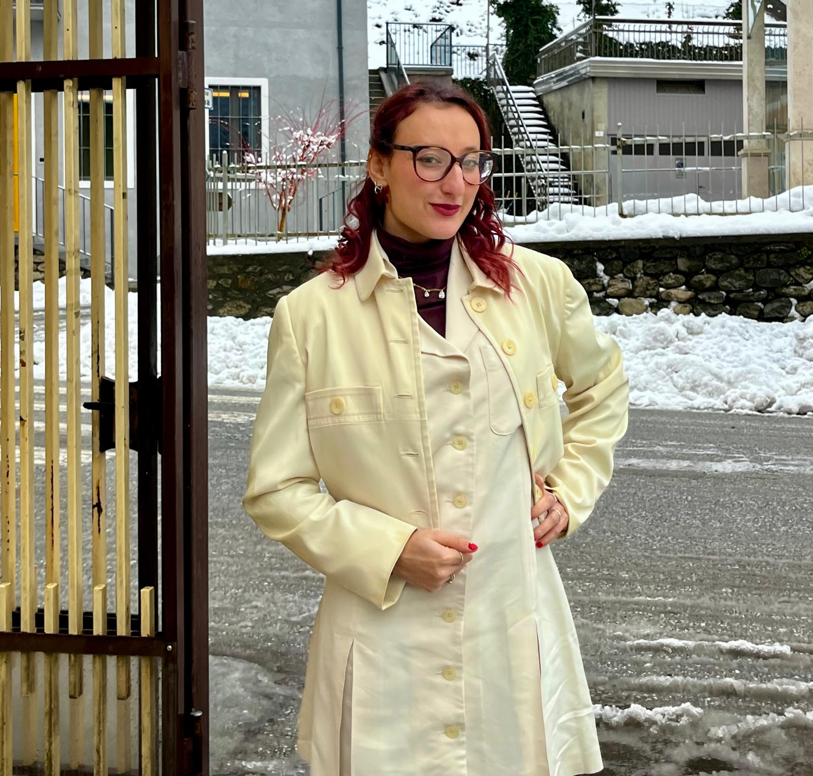
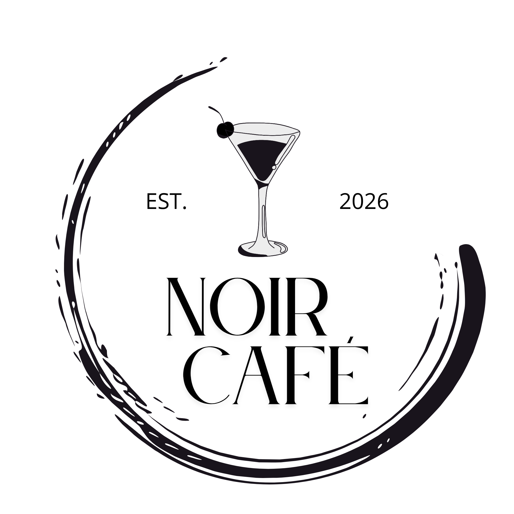

Logo per la ristorazione
Identità visiva · Branding
Ciao, sono Alice.
Mi occupo di Logo e Web Design, trasformo
idee in progetti digitali dal carattere unico.
Disponibile per nuovi progetti

Credo nel potere delle idee ben progettate.
Unisco creatività, ricerca e attenzione nei dettagli.
Realizzo progetti capaci di comunicare
e lasciare il segno.
Una selezione dei miei lavori più recenti, e delle ultime idee.
Identità visiva · Branding

Social kit per una pagina di ballerini · Logo design

Portfolio design · Visual Design · Web option

Creative Logo · Minimal
FORMAZIONE
Lacerba.io · 2022 · Logo design
Visualizza la certificazione ↗Lacerba.io · 2023 · Web design
Visualizza la certificazione ↗Lacerba.io · 2023 · Web design
Visualizza la certificazione ↗Lacerba.io · 2023 · Web design
Visualizza la certificazione ↗Raccontami la tua idea. Realizziamola iniseme.
Scrivimi una mail ↗ Scrivimi su Whatsapp ↗